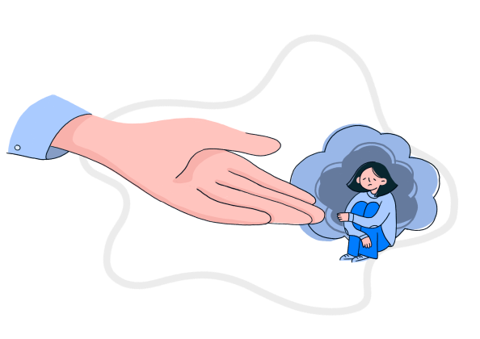

Сайт психологической помощи Московского Политеха
Иногда справляться с трудностями в одиночку тяжело. Наши психологи помогут найти выход. Консультации бесплатны, конфиденциальны и доступны очно или онлайн.

📋 Ключевая информация
Цель проекта
Разработать удобную платформу для записи на приём к психологу в Московском Политехе, обеспечивающую простой и интуитивно понятный интерфейс для студентов и сотрудников.
Актуальность
Студенты часто сталкиваются с проблемными ситуациями, требующими помощи психолога. Отсутствует единая удобная система записи к специалистам Службы психологической помощи.
Целевая аудитория
Студенты и сотрудники Московского Политеха, нуждающиеся в психологической поддержке. Большинство опрошенных (74,2%) выбрали бы запись через официальный сайт.
Информационная безопасность
Разработаны политики конфиденциальности, обработки cookies, хранения персональных данных. Проведён анализ уязвимостей бэкенда и фронтенда.
Команда проекта
Над проектом работает 9 команд: Frontend, Backend, Тестирование, Документация, ИБ, Аналитика, Дизайн,Медиа, Внешние коммуникации.
Статус разработки
Разработаны дизайн-макеты в Figma, ведётся Frontend и Backend разработка, реализовано тестирование API и функционала. Запуск MVP — приоритет 1.
Чем психолог может помочь используя наш проект для связи со студентом?
Профессиональная поддержка в важных жизненных ситуациях: от поиска себя до повышения самооценки
...в поиске себя
Поможем разобраться в жизненных целях, внутренних конфликтах и ценностях. Обретёте ясность и уверенность в собственном пути.
...в происшествии
Острая психологическая поддержка после травмирующих событий, аварий, утрат. Поможем пережить стресс и восстановить равновесие.
...в поиске выхода из депрессии
Работа с апатией, подавленным состоянием, потерей интереса к жизни. Поэтапное восстановление ресурса и настроения.
...в преодолении перепадов настроения
Научитесь управлять эмоциональными качелями, снижать тревожность и стабилизировать эмоциональный фон даже в сложные периоды.
...в повышение концентрации
Методы фокусировки внимания, борьба с прокрастинацией и рассеянностью. Повысите продуктивность в учёбе и работе.
...в повышение самооценки
Укрепим веру в себя, избавим от неуверенности и внутреннего критика. Поможем раскрыть ваш личный потенциал.